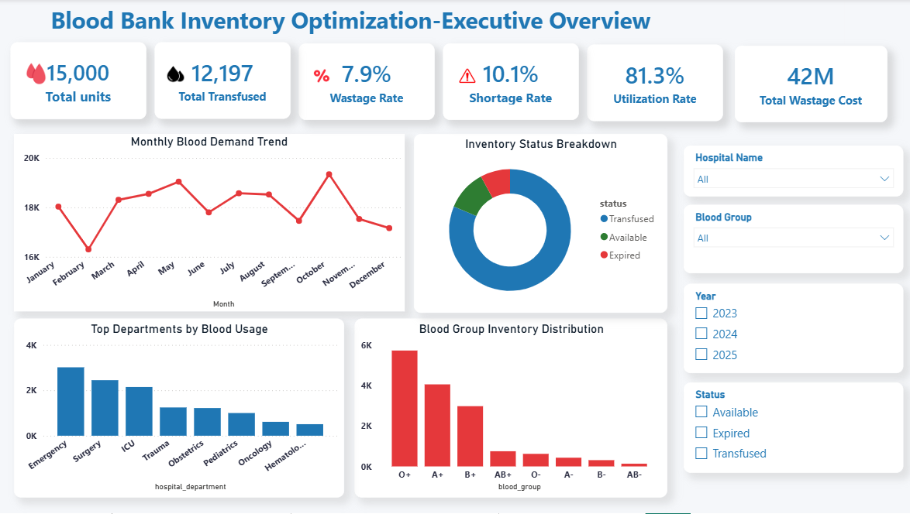
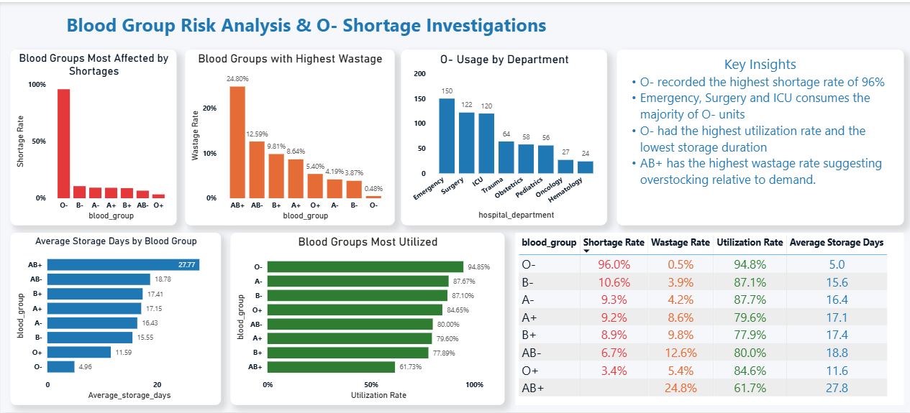

HEALTHCARE ANALYTICS PROJECT
Analyzing blood inventory performance, utilization patterns, and wastage trends to identify opportunities for improving blood bank efficiency and decision-making.

This project explores blood bank inventory data to understand availability, utilization, shortage risks, and wastage patterns. The goal was to generate insights that support better inventory management and reduce avoidable losses.
Blood banks must maintain sufficient supply to meet patient needs while minimizing expiry and wastage. Poor inventory planning can lead to shortages during critical situations and unnecessary financial losses.
Data Cleaning
Exploratory Analysis
SQL Analysis
Power BI Dashboard
Insights & Recommendations
O− recorded the highest shortage and utilization rate, showing limited inventory buffer for emergency demand.
AB+ experienced the highest wastage rate due to prolonged storage and inventory imbalance.
Demand peaked in October while February showed lower demand, highlighting opportunities for better procurement planning.
LUTH recorded the highest wastage cost, indicating possible opportunities for improved stock rotation and planning.
Prioritize usage of blood units approaching expiry to reduce preventable wastage.
Use demand patterns to maintain appropriate stock levels and reduce overstocking.
Use historical trends to improve procurement decisions during high and low demand periods.
Interactive Power BI dashboard developed to monitor blood inventory, utilization, shortages, and wastage performance.
